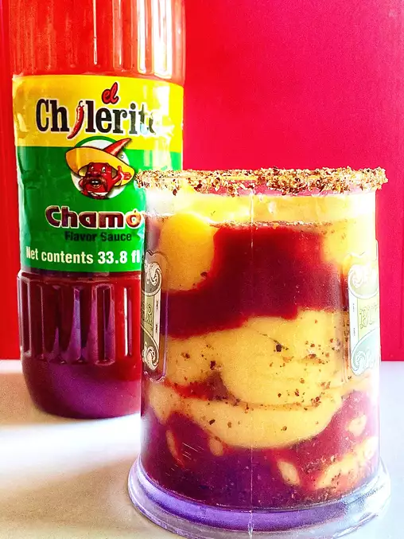

Chamoyada

Description
Chamoyadas originated in Mexico and are commonly made with fresh mangos and chamoy sauce.
You can also use fresh frozen mangos and pineapple juice for an added tropical twist.
Ingredients
1 cup of diced fresh mango (or frozen)
6 ounces of pineapple juice
1/2 lime
2 teablespoons of chili-lime seasoning (tajin)
2 teablespoons of chamoy (mexican chili fruit condiment)
Steps
- Mix the mangos and the pineapple juice in a blender until smooth.
- Rub lime around the rim of a glass and dip 1 teaspoon of the chili-lime seasoning
- Juice lime into the glass and add 1 teablespoon of chamoy and 1 teablespoon of chili-lime seasoning
- Pour in 1/2 of the mangoo/pineapple mix and add to the remaining of the glass chamoy and top with a little bit more of the mango-pineapple mix
Home